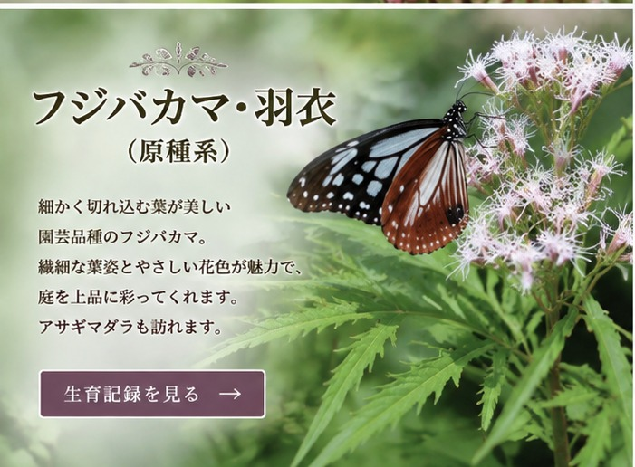

羽衣とは？
「羽衣」は、葉に細かな切れ込みが入る繊細な姿が特徴の園芸品種として流通しています。一般的なフジバカマとは葉の印象が大きく異なり、花だけでなく葉姿も楽しめるのが魅力です。
※ 園芸店では「フジバカマ・羽衣」「ユーパトリウム・羽衣」などの名称で流通します。このブログでは育てている株の記録名として「フジバカマ・羽衣」を使用します。
わが家の生育記録
写真と日付を追加しながら、草丈、枝数、蕾、開花の変化をここへ記録していきます。
細かく切れ込む葉が美しい「羽衣」の記録。

「羽衣」は、葉に細かな切れ込みが入る繊細な姿が特徴の園芸品種として流通しています。一般的なフジバカマとは葉の印象が大きく異なり、花だけでなく葉姿も楽しめるのが魅力です。
※ 園芸店では「フジバカマ・羽衣」「ユーパトリウム・羽衣」などの名称で流通します。このブログでは育てている株の記録名として「フジバカマ・羽衣」を使用します。
写真と日付を追加しながら、草丈、枝数、蕾、開花の変化をここへ記録していきます。